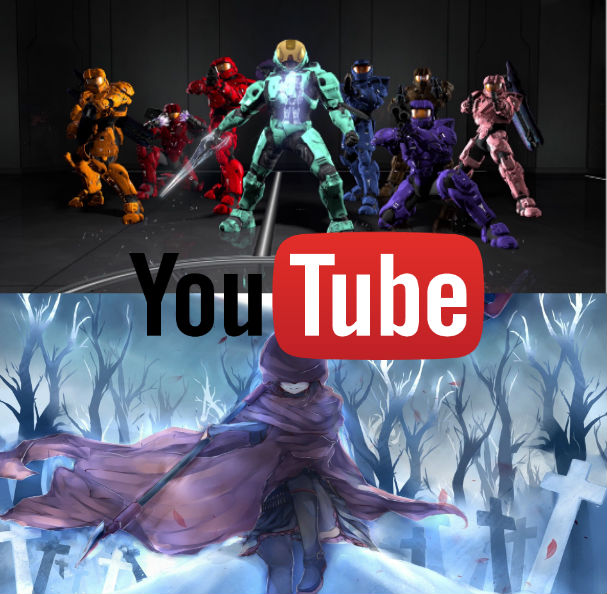
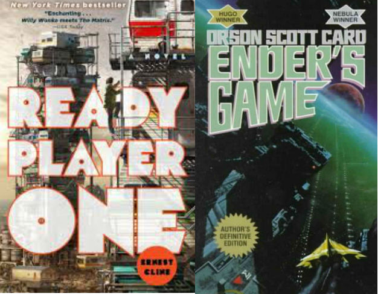

Youtube

I watch quite a bit of YouTube, and am subscribed to many channels. Two of my favorite series to come from YouTube are Red vs. Blue and RWBY from Rooster Teeth. Two action packed, funny shows that I enjoyed quite a bit.
Here's a fun video
Books
 I don't read a lot, but I do enjoy a good book here or there. Two of my favorite books are Ender's Game and Ready Player One, both are Sci-Fi books set in the future. The title of this webpage, "The Basement" is actually a reference to an online chatroom frequented by the main characters of Ready Player One.
Deepest Darkest Secrets
 Ha. You wish.
Ha. You wish.
Favorite Characters

What am I Watching Right Now?
What am I Playing Right Now?